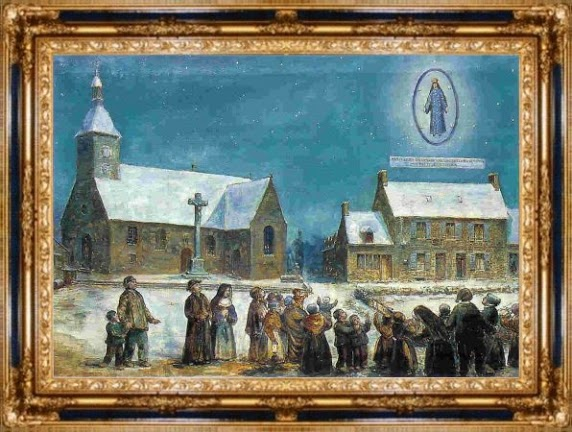
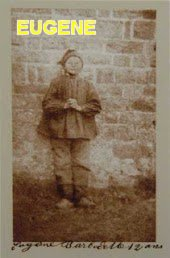
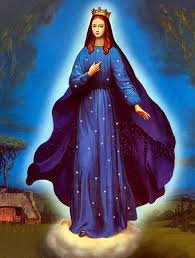
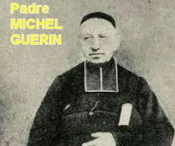

“MULHER MARAVILHOSA”
INÍCIO
Sabemos que nenhuma guerra é benéfica a ninguém e que elas mostram de maneira viva, à ganância, o egoísmo, as maldades e intolerâncias humanas, além da destruição material, das terríveis mortes e infelicidades de todas as naturezas, que acontecem durante um entrevero militar. Na verdade, cada conflito evidencia uma usurpação do direito, um desrespeito e uma abominável insensatez, que neutraliza a razão e a força do amor honesto e puro.
A guerra denominada Franco – Prussiana (ou Franco - Germânica), se efetivou por uma violenta e abominável invasão da França (país dos Francos), pelos prussianos ou germânicos, bem preparados para uma ofensiva militar. Ela ocorreu depois de muitas intrigas, discussões e ameaças, no dia 19 de Julho de 1870, quando os prussianos comandados pelo Chanceler Otto von Bismark invadiu a França.
ALDEIA DE PONTMAIN
Pontmain naquela
época era uma pequena aldeia, localizada na Bretanha, França. Mas, do mesmo modo
que hoje, dificilmente se encontra a sua localização nos mapas franceses. Antigamente
as suas poucas casas se escondiam entre as ruínas de uma grande fortaleza existente.
Mas, neste lugar tão bucólico, distante e modesto, os moradores sempre foram competentes
e fervorosos com suas orações a “DEUS”,
pois sempre eles colocavam em evidência
a devoção Cristã, 
Também, naquela época, desde o dia 23 de Setembro 1870, os quase 200 moradores do povoado estavam desesperados e aflitos com os acontecimentos, pois a França tinha sido invadida pelo forte exército prussiano, que queriam utilizar a Bretanha como canal de acesso, que é a região onde estava a aldeia de Pontmain, e assim, eles estavam na rota dos invasores. Para aumentar a tensão dos moradores, a guerra franco-prussiana levou trinta e oito rapazes de famílias do lugarejo, que foram convocados como soldados para participar do exército francês, e logo foram enviados para frente de batalhas. Por isso mesmo, antes de partirem, os jovens quiseram através das orações, se despedirem de “JESUS” e da “MÃE DE DEUS”, suplicando a bênção e uma especial proteção celeste para uma campanha tão difícil e incerta. Nessa oportunidade, o Pároco de Pontmain, Padre Michel Guérin, recebeu-os com alegria e fervorosamente consagrou os 38 rapazes à “SANTÍSSIMA VIRGEM MARIA”, colocando-os sob a preciosa e maternal proteção da “MÃE DE DEUS” e de “SEU FILHO JESUS”.
A PREOCUPAÇÃO ERA GERAL
Os prussianos prepararam convenientemente os seus homens para uma forte operação militar, e assim, iniciaram a guerra com uma feroz investida bélica contra os seus opositores, impondo logo de inicio ardilosas táticas, mostrando que verdadeiramente seguiam firme no combate, cada vez mais favorável a eles, ao exército prussiano, também chamado de exército germânico. Eles avançaram violentamente vitoriosos sobre os territórios da França. Em janeiro de 1871, o povo francês já vivia dias dramáticos, pois sofriam com a carestia dos alimentos, inclusive falta de produtos em consequência das operações militares, e também, por causa das doenças causadas em virtude do rigoroso inverno, acompanhado de uma abominável epidemia de febre tifóide. Nesse mês de Janeiro, as tropas prussianas sob o comando de Bismarck, grande especialista militar, já haviam capturado a cidade de Paris e prendeu Napoleão III, o Imperador francês, que era sobrinho do famoso Napoleão Bonaparte. Isto significa dizer, que pela força de seu poderio militar, praticamente em poucos dias os prussianos já tinham vencido a guerra. E então, apenas com o objetivo de completar o cerco contra os franceses, em todas as direções, pretenderam invadir a área da Diocese de Laval, que inclusive engloba a aldeia de Pontmain. Desse modo, o comando das forças prussianas programou uma investida para o dia 17 de janeiro de 1871.
No pequeno povoado de Pontmain todos temiam os alemães, que já dominavam quase toda a França, e provavelmente já caminhavam na direção deles. É assim que naquele dia 17 de Janeiro com natural receio, seus habitantes cuidavam do trabalho de cada dia, concentrados nas boas realizações quotidianas, mas, sobretudo com muita fé na misericórdia Divina, confiantes de que “DEUS” haveria de modificar o pensamento dos prussianos, fazendo com eles voltassem para a Alemanha.

A VIRGEM MARIA VIGIAVA
No entardecer daquele dia 17 de Janeiro, duas crianças Eugene Barbedette com 12 anos de idade e seu irmão Joseph Barbedette com 10 anos, ajudavam o pai trabalhando no Celeiro, batendo no tojo, a fim de preparar a alimentação da égua, que fazia o transporte de carga da família.
Fora da pequena vila de Pontmain, o exército prussiano já avançava firme naquela tarde fria de inverno em direção a Laval, conforme a programação do alto comando prussiano para cumprir a missão projetada. Mas esbarraram na fortaleza Divina. Exatamente naquele mesmo horário e dia, em que a “SANTÍSSIMA VIRGEM MARIA” apareceu às crianças em Pontmain, concretizando de maneira admirável, uma preciosa intervenção Divina, com certeza programada por "NOSSO SENHOR". Os fatos ocorreram como descritos a seguir.
APARIÇÃO MARAVILHOSA

Três grandes estrelas brilhantes delimitavam, por assim dizer, a área visual em que ELA se encontrava. A visibilidade era perfeita, pois ELA apareceu bem próxima, cerca de 6 metros acima do telhado da casa vizinha, de propriedade do senhor Agostinho Guidecoq. Eugene estava admirado, e permanecia sorrindo encantado com a deslumbrante beleza daquela linda “Senhora”. E na verdade, o sorriso Dela foi à única comunicação, porque durante todo o tempo em que Aquela Linda “Senhora” ali permaneceu, a manifestação da SUA satisfação e o SEU diálogo era somente através do SEU lindo sorriso. ELA não disse nenhuma palavra.
Joseph Barbedette de 10 anos, que era irmão de Eugene, e participava da conversa com o pai no interior do Celeiro, decidiu também tomar um pouco de ar; assim foi à porta do Celeiro inclusive para saber onde estava o seu irmão, e teve a grande e admirável surpresa de ver aquela “Bela Senhora”. Entusiasmado com a coincidência, junto com o irmão exclamou em alta voz “Que Bela Senhora”, chamando a atenção de todos, dos seus parentes e dos outros vizinhos que se aproximaram rapidamente para saber o que acontecia! Mas as pessoas não conseguiam ver a “Bela Dama”, só enxergavam as três estrelas brilhantes que marcavam a área do local onde ELA estava.
FORAM CHAMAR O PADRE 
A senhora Victory, mãe dos meninos, veio ligeiro para saber o que estava acontecendo, mas também não viu nada, apesar de ter voltado a casa para pegar os seus óculos. Ela então foi à escola e solicitou à religiosa Irmã Vitaline para que fosse ao Celeiro a fim de testemunhar uma “Visão Maravilhosa”. A Irmã Vitaline logo ficou ansiosa para ver a “Bela Dama” , lá chegando, não conseguiu ver a A Bela Dama da Aparição, só pode observar as três estrelas que apareciam ao redor “DELA”. Então a Irmã retornou à escola, chamou à outra religiosa Irmã Marie-Edouard, e logo retornaram ao Celeiro levando mais duas pequenas pensionistas. Quando chegaram, as duas jovens pensionistas, Françoise Richer (Francisca Richer) de 9 anos de idade e Jeanne-Marie Lebossé (Joana Maria Lebossé) de 11 anos, exclamaram: “Oh!Que moça bonita! Que linda ela é!” E admiradas descreveram como a “Bela Senhora da Aparição” estava. A Irmã Marie-Edouard saiu ligeiro para avisar o Padre, enquanto a Irmã Vitaline começou uma oração à “VIRGEM MARIA”, em companhia das pessoas que lá estavam e que já constituía um grande número.
- “Senhor Pároco”! Gritou à irmã Marie-Edouard desde a porta do presbitério, “Venha rapidamente ao Celeiro dos Barbedette, há uma maravilha: as crianças estão vendo a SANTÍSSIMA VIRGEM MARIA! E o Padre, admirado e cheio de surpresa, respondeu: “Um prodígio! A VIRGEM SANTÍSSIMA! Mas, minha irmã, você me assusta”! A velha serva, Jeannette Pottier, intervém: "Temos que ir e ver, Senhor Cura!" E ela acendeu a lanterna para iluminar à noite, e rapidamente todos caminham até o local.